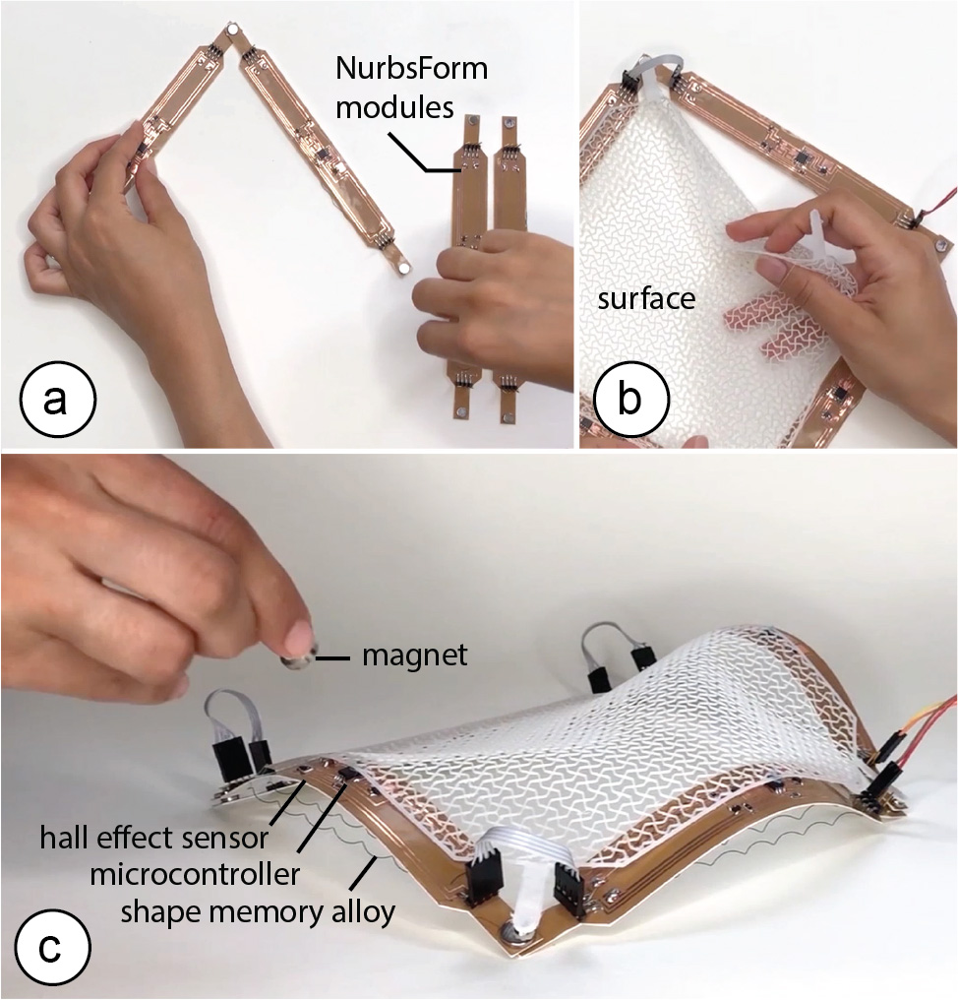
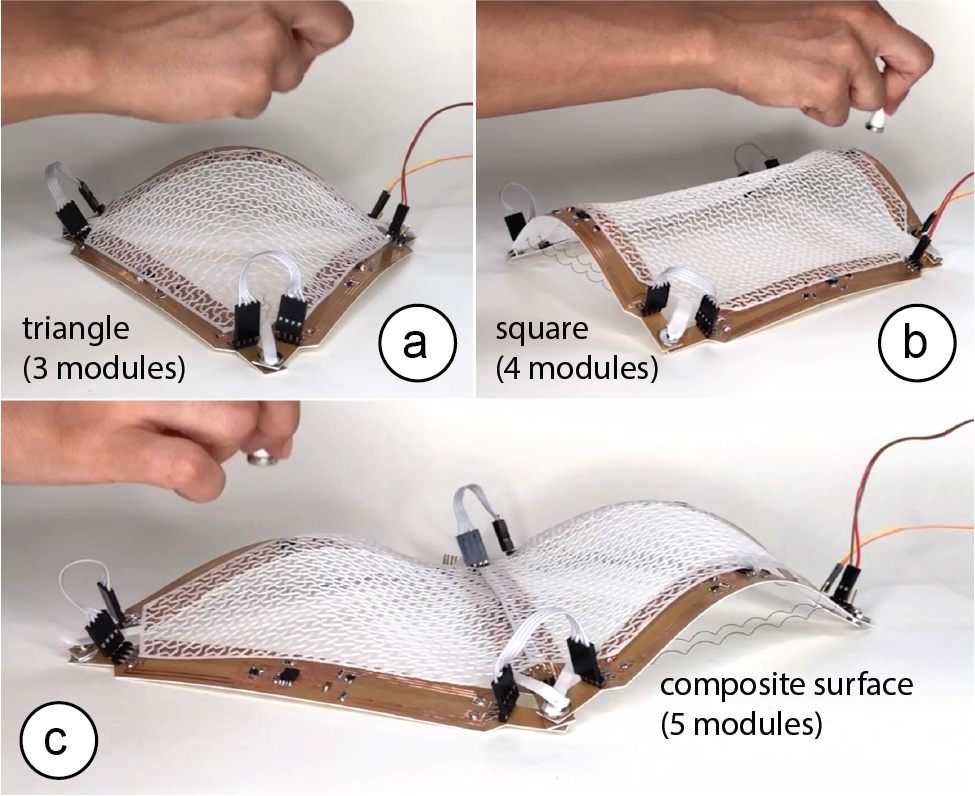
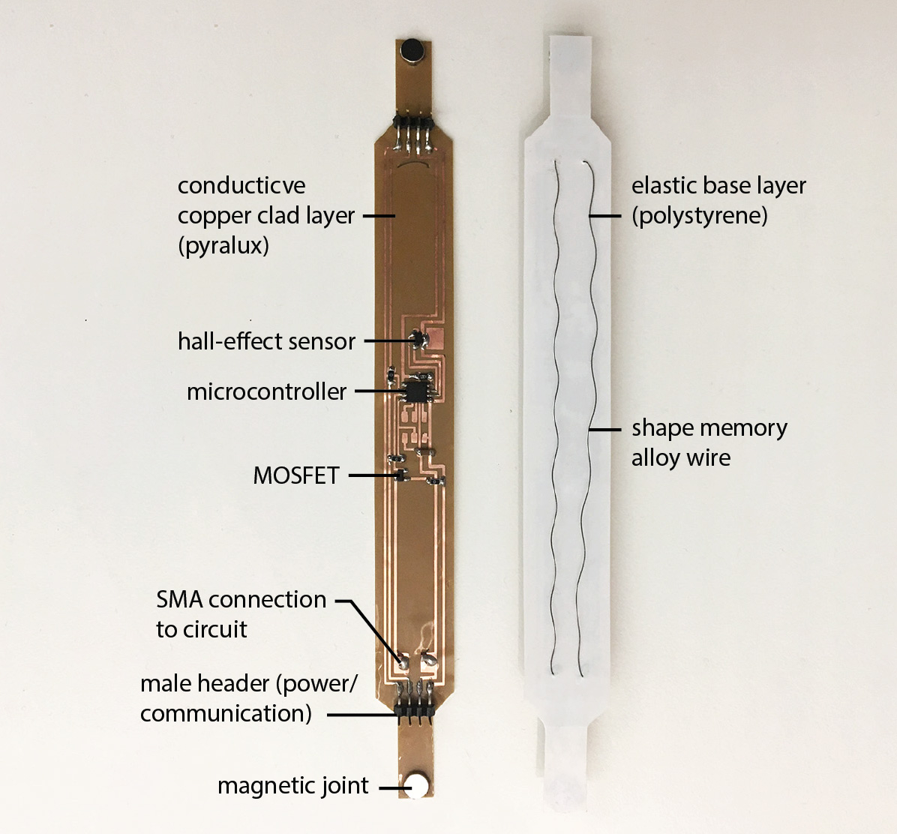
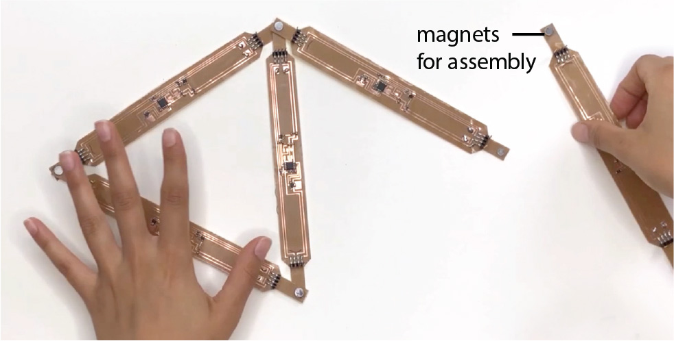
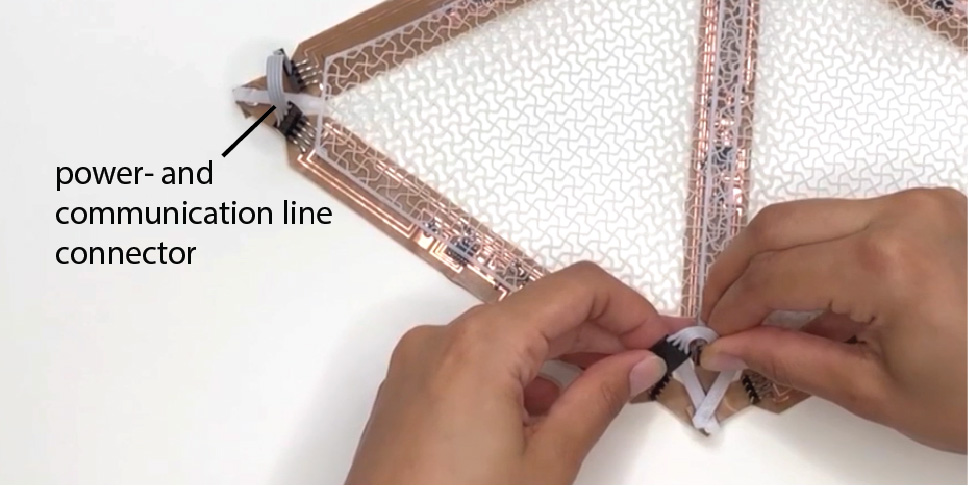
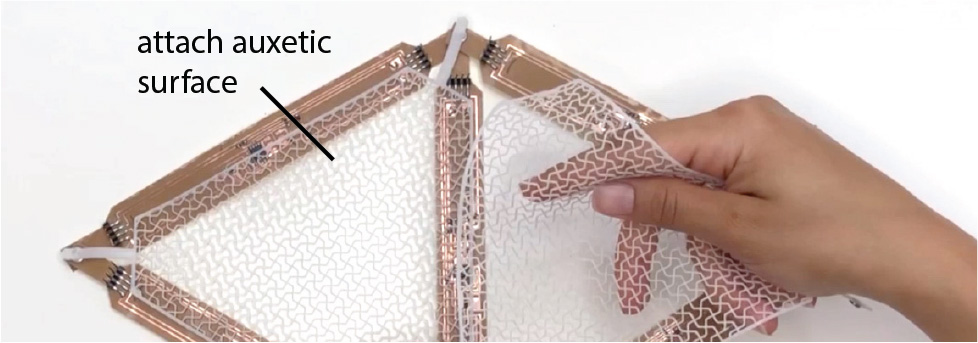
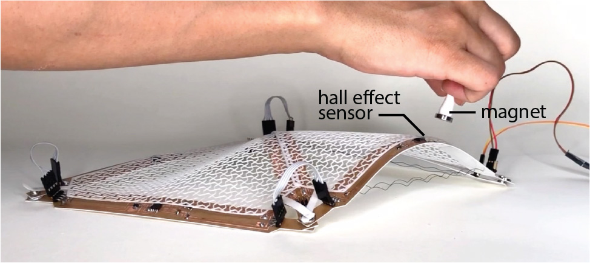
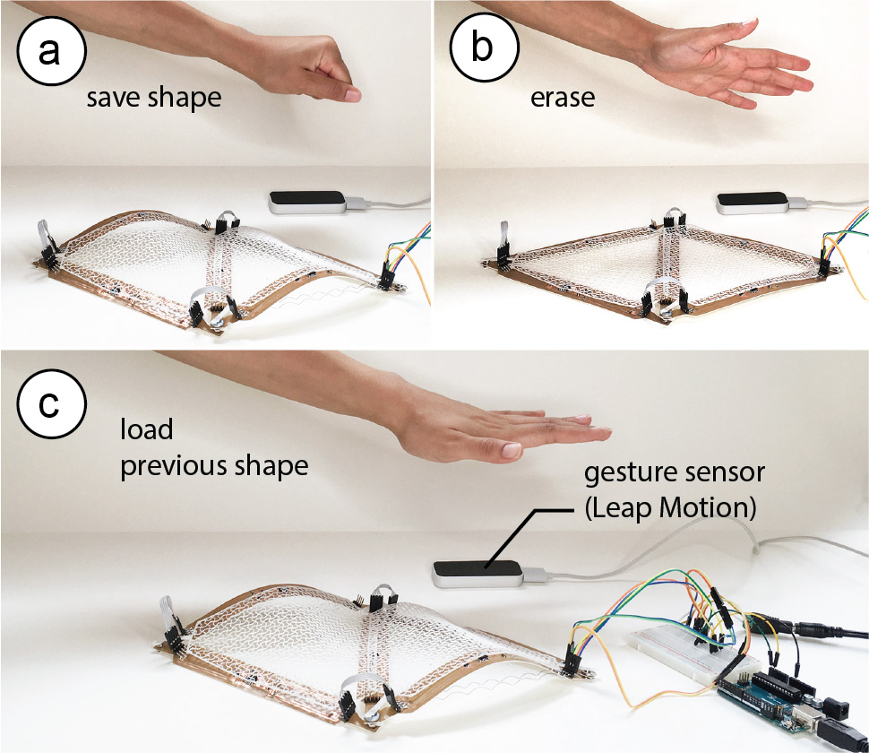

NURBSforms:
A Modular Shape-Changing Interface for Prototyping Curved Surfaces.

Figure 1. NURBSforms is a modular shape-changing inter- face for modeling curved surfaces. Each NURBSform mod- ule represents an edge of variable curvature that, when joined together with other modules, enables designer to con- struct a surface whose curvature can be adjusted in real- time.
We present NURBSforms: a modular shape-changing interface for prototyping curved surfaces. Each NURBSform module represents an edge of variable curvature that, when joined together with other modules, enables designers to construct surfaces where curvature can be adjusted interactively. NURBSform modules vary their cur- vature using active and passive shape memory materials: an embed- ded shape memory alloy (SMA) wire increases the curvature when heated, while an elastic material recovers the flat shape when the SMA wire cools down. A hall effect sensor on each module allows users to vary the curvature by adjusting the distance of their hand. In addition, NURBSforms provides functions across multiple mod- ules, such as ‘save’, ‘reset’, and ‘load’, to facilitate design exploration. Since each module is self-contained and individually controllable, NURBSform modules scale well and can be connected into large networks of curves representing various geometries. By giving ex- amples of different NURBSforms assemblies, we demonstrate how the modularity of NURBSforms, together with its integrated com- putational support, enables designers to quickly explore different versions of a shape in a single integrated design process.
Introduction
Physical prototypes are an effective way to explore, represent, and iterate on design solutions because physical models express design aspects, such as form, scale, and spatial proportions better than their digital counterparts [8, 9]. In addition, the direct, hands-on in- teraction with the physical prototype supports exploration, which has been shown to enhance creativity [18]. However, today, phys- ical prototyping lacks the computational support that digital 3D modeling tools offer to designers, such as the ability to quickly modify shapes, and to save and reload a prior version of a design.
In digital 3D modeling, designers can quickly create models us- ing free-form curves and surfaces. For instance, using a modeling method called NURBS modeling (Non-Uniform Rational B-Splines) designers can rapidly create curved surfaces by manipulating the control points of the edges of the surface. Iterating on a design becomes easy since only the control points of the surface have to be changed to explore different versions. Doing the same task with physical prototypes requires a significant amount of time, prevent- ing designers from iterating as efficiently as they do digitally.
Inspired by work on shape-changing interfaces and interactive fabrication, the goal of our work is to bridge the gap between digital and physical modeling. In particular, we explore how to transfer the concept of NURBS editing from digital to physical model making. To recreate the curve-editing process, we developed NURBSforms: a modular shape-changing interface of variable curvature that can be manipulated via hand gestures and that offers global functions such as ‘save’, ‘reset’, and ‘load’ (Figure 1). Since NURBSforms is modular in nature, designers can assemble networks of different shapes and complexity. With NURBSforms, designers benefit from features of both the physical and digital model making process, i.e. hands-on prototyping and reversible changes that enable fast design iteration.
Interaction Techniques for Curve Manipulation
To date, several different methods have been used for manipulating programmable surfaces, including both contact and non-contact methods. One example of a contact method are deformable strips with integrated sensors that, when manipulated by hand, map their shape onto a digital curve. Devices such as these that can sense their own shape have been built using integrated fiber optic bend sensors (ShapeTape [1]), arrays of strain gauges and inertial motion units (fStrip [3]), and arrays of LEDs that can be detected by an infrared camera (RoCuModel [19]). Rather than being held in the hand of a user, these types of deformable strips have also been di- rectly integrated with the shape of objects to sense user interaction with them (FlexiBend [4]). To use the strips for shape output (in addition to shape input), researchers have embedded a series of 1 DOF rotational servo actuators into the strips to display different shapes (LineFORM [12]).
Unlike the above studies, NURBSforms uses a non-contact input method through a magnet which has several benefits over direct hand manipulation: First, the physical tool does not need to be continuously held, freeing up the hands to perform other functions such as save, load and reset. Second, analog hand manipulation may cause unwanted changes in other modules, whereas digital thresholding of a magnetic input signal limits manipulation to one individual curve at a time. Furthermore, the larger the tool (i.e. when more NURBSforms modules are connected) the more challenging it is to hold and manipulate them all at the same time.
NURBSFORMS
NURBSforms is a modular shape-changing interface made from self-contained, individually controllable modules. As can be seen in Figure 2, these modules can be connected together into networks of curves to represent different 2D surfaces without the need for an external controller or wiring.
By taking advantage of the communication between the em- bedded micro-controllers, modules can also be controlled globally, enabling both synchronized shape-change and top-down functions, such as save, load, and reset, regardless of the arrangement and number of modules. This allows designers to benefit from features of digital modeling tools such as reversibility and repeatability while engaging in hands-on interaction with the prototype. Fur- thermore, using gestural interaction removes the need for having any additional interface such as a button or GUI, and does not place a limit on the number of functions that can be stored.

Figure 2. Different NURBSform assemblies: (a) 3 modules forming a triangle, (b) 4 modules forming a square, (c) 5 mod- ules forming a composite surface.
To mirror the behavior of a virtual NURBS curve, a NURBSform module can increase or decrease in curvature. To be able to in- crease in curvature, a NURBSform module uses an embedded shape memory actuator (SMA wire). Applying an electric current heats the SMA wire, causing it to contract, which bends the strip and thereby increases the curvature. To be able to decrease in curvature, a NURBSform module is laminated onto an elastic base material (Polystyrene) that recovers the flat shape of the strip when the SMA wire cools down (see section ‘Hardware’ for more details).
HARDWARE: FABRICATING A NURBSFORM MODULE
The NURBSform hardware satisfies two requirements: First, NURBS- form modules are self-contained units, i.e. each module has all sens- ing, actuation, and processing hardware on board of the strip. This allows NURBSform modules to be assembled into networks of arbi- trary configuration and size. Second, in order for the SMA actuation mechanisms to accomplish the desired curvature quickly, NURBS- forms modules are lightweight (total weight: 5g). A heavier module would require a thicker SMA wire to provide enough force for bend- ing the strip, however, a thicker SMA takes considerably longer to heat and cool, and therefore longer to alter its shape, which consequently slows down the interaction.
Fabrication Process
We fabricated each NURBSform module as a flexible circuit laminate strip consisting of two layers (Figure 3): a conductive copper clad layer (DuPont Pyralux, 0.04mm) for the circuit and an elastic base layer (Polystyrene, 0.3mm) that resets the strip into a flat state.

Figure 3. NURBSforms module’s hardware.
To fabricate a NURBSform module we proceeded in the following steps:
Etching the Circuit: After designing the circuit in the elec- tronic design software Eagle, we exported the traces as an image file and then inverted the image to create a mask that preserves the electrical traces. We then used a vinyl cutter to cut the mask from vinyl stickers and adhered it to the conductive copper clad laminate. Afterwards, the copper laminate was placed in Ferric Chloride solution, which is a chemical etchant that removes the unmasked copper from the laminate. We removed the strip from the solution after 10 minutes.
Laminating the Elastic Base Sheet: After removing the strip from the chemical bath, we cleaned the strip and then lami- nated it onto the elastic base sheet.
Soldering the Electric Components: Next, we soldered the elec- trical components onto the circuit in the layout shown in Fig- ure 3. The electrical components include a micro-controller (ATMEL ATTINY85) for controlling the circuit and process- ing user input, a hall-effect sensor for detecting hand move- ments by the user, and a MOSFET to power the actuators. The 4-pin male headers soldered on the two ends of the strip facilitate electrical connections to the power source and the communication lines.
Attaching the Shape Memory Actuator: Lastly, we attached the shape memory actuator to the strip by looping it through the strip at one end and then soldering it onto the allocated traces on the circuit at the other end of the strip. Before attaching the shape memory actuator, we treated the SMA wires (Nitinol, thickness: 0.25mm) to form the shape of a coil, which amplifies their range of curvature transformation from flat wire to a contracted state. To do this, we followed the steps from Coelho et al. [5]: we first constrained the shape of the SMA by rolling and fixing it around a screw, and then heating it to 60 ◦C for 13 minutes to program this shape into the memory of the wire. Once the shape had set, we quickly cooled it down by submerging the coil into cold water (room temperature, 25 ◦C) to return the wire to its original form.
Attaching the Magnets for Assembly: Finally, we glued one magnet on each end of the strip. Users can use the magnets to make the mechanical connection between modules.
Making one NURBSform module takes approximately 1.5 hours for all steps (vinyl cutting, etching, laminating, soldering, SMA wire forming) and costs less than $5. The total NURBSform module length is 19cm and its weight is 5g, which allows the shape memory alloy to create a wide range of curvatures (curvature radius of up to 52 mm which takes 4 seconds to attain from flat, it takes 7 seconds for the module to return to a flat state from maximum curvature).
WALKTHROUGH: WORKING WITH NURBSFORMS
Working with NURBSforms follows a two-step process: (1) assembly, and (2) curve editing.
Assembly
To create a network of curves with a desired size and configuration, users start by assembling the modules using the magnets provided on each end of a module (Figure 4).

Figure 4. Creating a network of curves from NURBSforms modules.
Next, to better visualize the shape of the 2D surface that forms when modifying the curvature of the NURBSform modules, users can apply an auxetic mesh that displays double curvature when bent (Figure 5). The auxetic surface is attached to each end of the module using magnets.

Figure 5. Attaching the auxetic surface to the assembly.
Finally, users connect the power and communication lines be- tween modules by connecting the male header pins at the end of the modules (Figure 6). Each module has to be connected to at least one other module to share power and communication across the network of modules.

Figure 6. Connecting power and communication lines.
Curve Editing
In the second step, users can manipulate the curvature of the mod- ules either by directly manipulating each individual module sepa- rately or by applying global actions across multiple modules, such as synchronized shape-change, loading a previously saved shape or resetting all modules to flat.
Interacting with Individual Modules: To support user inter- action with each individual module, NURBSform modules have an integrated hall effect sensor that, when users wear a magnet on their finger, can sense the distance of the user’s finger (i.e. the closer the magnet is to the hall effect sensor, the quicker the curvature change) and the magnets polarity (switch between increase or de- crease in curvature). Thus, to edit an individual module, users only have to hover over the module and then move their hand either towards the module or away from it using the magnet at the desired polarity (Figure 7).

Figure 7. Directly controlling each module individually.
Interacting Across Multiple Modules: To enable users to edit groups of modules, NURBSforms goes beyond curve manipulation via individual control points and offers an extended set of compu- tational functions that facilitate the modeling and design iteration process (Figure 8). By performing a tapping gesture, users can cou- ple multiple modules together and then perform a single curve manipulation operation that is applied to all modules simultane- ously. Similarly, NURBSforms offers functions, such as undoing a curve manipulation (swipe gesture), saving a module configuration (grab gesture), loading the previous configuration (circle gesture), and copy-pasting a curvature (pick-and-drop gesture) onto other modules. This interaction is supported through a motion sensor (Leap Motion) located on the side of the interface. Since these func- tions rely on memory and computing capability of a digital system, they have no equivalent in conventional physical model making.

Figure 8. Interaction across multiple modules.
Registering the Digital Representation
While it is possible to work with NURBSform in standalone mode, i.e. only with the physical representation, all interaction with NURBS- form modules is tracked via the integrated hall-effect sensors and can thus be visualized in a 3D modeling program in real time. This allows the creation of a virtual model that mirrors the curvature changes created with the physical interface. This virtual model can be graphically represented or shared in real time, or can be saved as the digital record of the design iterations, which can later be accessed by the user. Figure 9 showcases this at the example of a physical/virtual twin for a 4-module aggregation.
 Figure 9. Digital representation of the physical model (aux- etic surface mesh removed for better visibility).
SOFTWARE AND CONTROL
Figure 9. Digital representation of the physical model (aux- etic surface mesh removed for better visibility).
SOFTWARE AND CONTROL
NURBSforms modules can work in two modes of operation: (1) au- tonomous mode and (2) synchronized mode.
Autonomous Mode: In the autonomous mode, all computation takes places within the embedded microprocessors in individual modules, without having communication with other modules. The module reads the input data on user interaction from the embed- ded hall effect sensor, processes the data locally, and adjusts the actuation of the SMA wire to form the matching curvature.
Synchronized Mode: In synchronized mode, a central computer monitors and controls all the modules in the interface. An Arduino connected to the computer communicates the data to each individ- ual module (via the I2C Protocol). The synchronized mode facilitates interactions that control multiple modules at once, such as saving a module configuration, resetting all modules, or loading an existing module configuration.
CONCLUSION
We presented NURBSforms, a modular shape-changing interface that bridges digital and physical model making by bringing capabili- ties such as interactive transformation, reversibility, and repeatabil- ity to the physical modeling of curved surfaces. This surpasses the inherent limitation of physical model making, in which realizing a new shape requires repeating the fabrication process, costing time and additional raw material. We demonstrated how NURBSform modules can be assembled into different networks of curves, dis- cussed the different modes of interaction, and provided instructions on how to make NURBSform modules using standard hardware and fabrication tools.
For future work, we plan to extend the digital representation to also be modular, i.e. be able to mirror various physical configura- tions. To add this functionality, each NURBSform module has to communicate its connection to other modules back to the computer, which can be done through the communication channel already existing on each module. In addition, we plan to build a larger num- ber of NURBSform modules to explore their use in the context of architectural designs and other surface modeling applications.